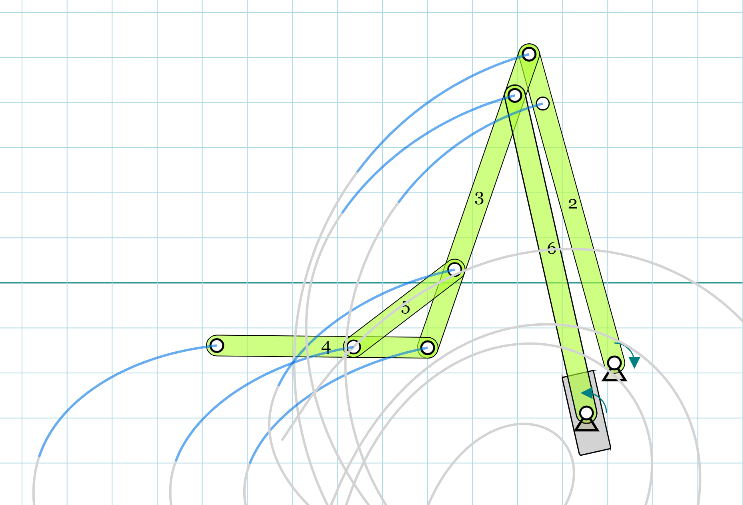
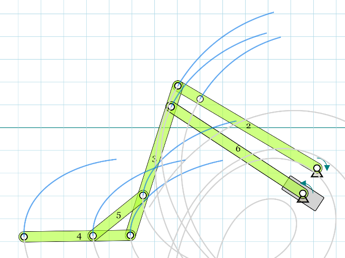

Portable access ramp
Abstract
The Carmichael family has identified a need for an access ramp, or similar mechanism, into their 2012 Ford Econoline van, to more easily load their son Andrew's handicap stroller into the van. Andrew's mother Terri currently lifts the 40+ pound stroller into the back of the van by hand, and then lifts her son into the van separately. The loading mechanism must be able to accommodate both the stroller and an adult pushing it into the van, and potentially Andrew himself in addition. With this in mind, structural integrity and safety is of the upmost importance, but factors like durability, product weight, and ease of use will also be taken into account.
Team members
Team Members: John Clack, Tristen Hunnewell, Tanner Johnson, Sam Miller
Problem Statement/overview of the need
The family's needs have been revised from the initial attempt at this project during the Spring of 2020. During this initial attempt the goal was to produce a product, a ramp, that would be versatile enough to span both the front steps of the Carmichael home as well as the rear access to their 2012 Ford Econoline van. However, in light of recent events, the family has decided that they would like to focus primarily on facilitating access into their van for their son Andrew's handicap stroller. This stroller weighs between 40-50 pounds, which is too cumbersome for Andrew's mother to constantly lift in and out of the extra large van, which sits around two feet above the ground, at a minimum. The initial concept for this application this a ramp, similar to the Spring 2020 team, however, the use of a hydraulic lift has also been considered for this more specific approach. Whichever design path is followed, the mechanism will need to support at least the weight of an adult plus the stroller, and possibly Andrew himself - the end design of the mechanism will dictate whether Andrew can safely stay seated within the stroller or must be carried separately. With the focus shifted from a multipurpose ramp, or other lifting mechanism, to one solely for the car the design specifications for the project have become more focused as well - these designs specifications will be discussed in detail below.
Design Specifications
- The product must accommodate both the weight of the handicap stroller and a full-grown adult, at a minimum, preferably even more.
- The product must be easy to handle when extending from or folding back into the van. (The goal is to produce a mechanism that is much lighter than the stroller weight [< 40-50 lbs])
- Due to the nature of the mechanism's application, being stored in and used on a van, the product must compact down to a manageable size that can be easily stored when not in use.
- The product must be adaptable enough to facilitate in the loading of various pieces of equipment (stroller, wheelchair, walker, etc.).
- The construction of the product itself must be able to be accomplished within the semester, in order to make the most immediate impact on the family's daily life.
Background research
There are currently many examples of portable ramps for sale in the public market, many of which are already made of a lightweight aluminum, and others that have folding features as well. Two of the most applicable of these ramps are captured below. These ramps would be cost effective choices, but lack practicality for a car application, primarily because they are either too short to keep Andrew safely seated in the stroller while entering the van, or are too long to realistically extended from the back of a car into a parking lot. These commercially available ramps also do not have proper mounting points that would be needed to safely attach them to a car. Mounting hardware would need to be designed and implemented if these ramps were to be used.

The other commercially available option for a lifting mechanism would be a hydraulic lift for the back of the van, which is purpose built for this exact application. The most obvious shortcoming of this solution is the high price tag, however, a lift reigns supreme in almost every other aspect when it comes to usability and safety. And, a way to offset the cost of this equipment would be to purchase a used lift, possibly from a different vehicle, and adapt its sub-frame and mounting hardware to fit the family's van. An example of this kind of lift is depicted below.
Conceptual Design
Design Concept 1
The following design 1 is for a folding ramp that creates a single flat surface once it is fully extended, which collapses into either two or four sections for storage. This ramp will contain locking joints at these fold points for rigidity, as well as anchor points which will be able to quickly attach or disconnect from the van. See the following model for reference.
Design Concept 2
The following design 2 is for a combination of two folding ramps, that will range from 6-12 inches wide each. Each of these ramps will fold into two sections which will allow for easy storage. These ramps will each contain locking joints and anchor hardware similar to the first design concept above. However, the separation of the ramp will allow for the product to be significantly lighter, though at the cost of user mobility. See the following model for reference.
Design Concept 3
The following design 3 is for a hydraulic lift, which ,unlike the other two designs, will be an existing mechanism that will need to be modified to properly fit the family's van. The components and designs of these types of hydraulic lifts range widely across application and manufacturer, so the exact modifications needed for a chosen lift will remain unknown until further used-market research is completed. The following model displays the basic motion of an example lift, projected for an existing product. A more detailed model of this mechanism will be created if this product becomes the final design.
The following model shows the lift at the top of its travel: 
The following model shows the lift at the bottom of its travel: 
Evaluate concepts/select candidate
A number of criteria, displayed on the table below, have been considered in order to access the practicality and feasibility of each of the three designs. The criteria boxes have also been highlighted in various colors which correspond to multipliers based on importance to the overall design. These scores are then added to produce a final score, the highest of which should be representative of the best design at this preliminary stage.
From the results above, design number three, the hydraulic lift is the highest scoring design, followed closely by the single ramp, and trailed significantly by the double ramp.
Detailed Design
After meeting with the Carmichael again, and taking detailed measurements of their 2012 Ford XL Econoline van, specifically of the side and rear entrances, it was determined that the best solution to the family's immediate needs would in fact be a more simplistic ramp design, as opposed to some type of hydraulic lift. After talking with the family and discussing other children with similar conditions to Andrew, the team learned that the current stroller setup that Andrew is in will sustain the family for at least the next five years, as Andrew will most likely remain at a weight less than 40-50 lbs for this duration. Thus, the idea of loading the stroller via a ramp and loading Andrew separately will be viable for the foreseeable future. However, because this solution will still involve Andrew's mother loading him in the side entrance to the van by hand, after loading the stroller into the rear via a ramp, she has requested an extra step to the side entrance be fitted, the the almost 16 inch reach to the first step is rather taxing for her, especially while lifting Andrew. The final design and analysis of the ramp and step will be further discussed below.
Description of selected design
Detailed description of selected design
Analysis
Describe three types of analysis to be performed on the design
Engineering analysis 1
Engineering analysis 2
Engineering analysis 3
CAD Drawings
Insert drawings of all parts and the assembly
Bill of Materials
qty, item, description, source, part number, price
Assembly Instructions
Fabrication Process
Insert pictures of fabrication process
Testing and implementation
Describe testing, delivery, how used/received by the family
Photos of Completed design
Insert pictures of the final product
Instructions for safe use
Provide a clear summary of safe use for the family. Do not use the device unless supervised by an adult that has been fully understood the safe use of this product.